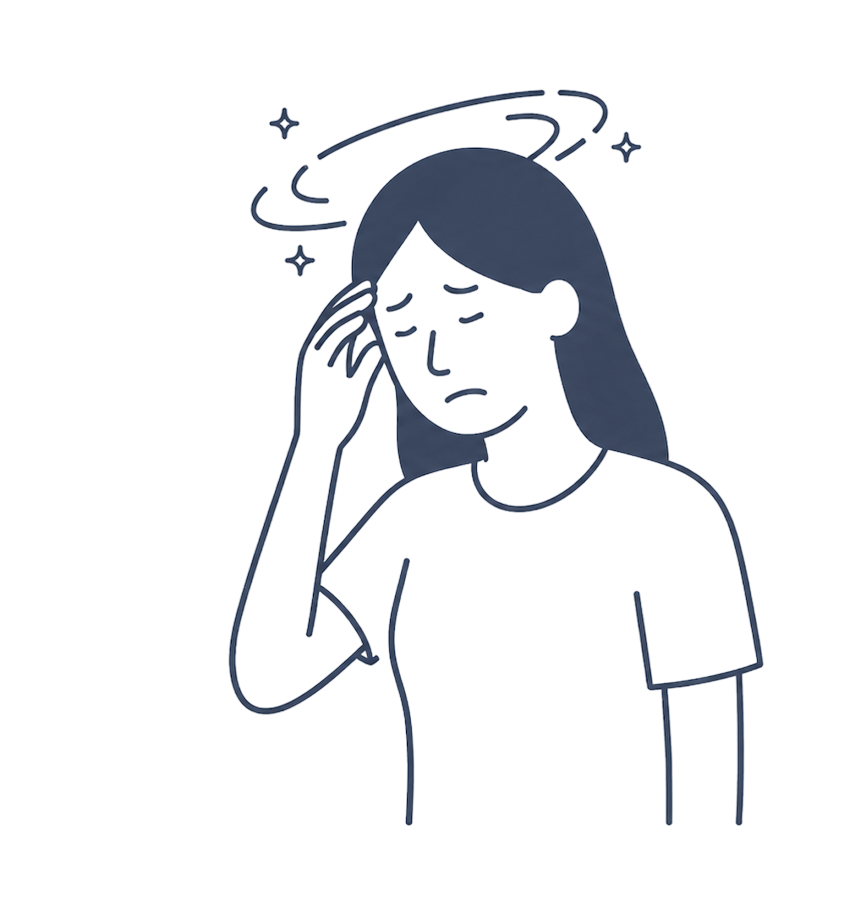
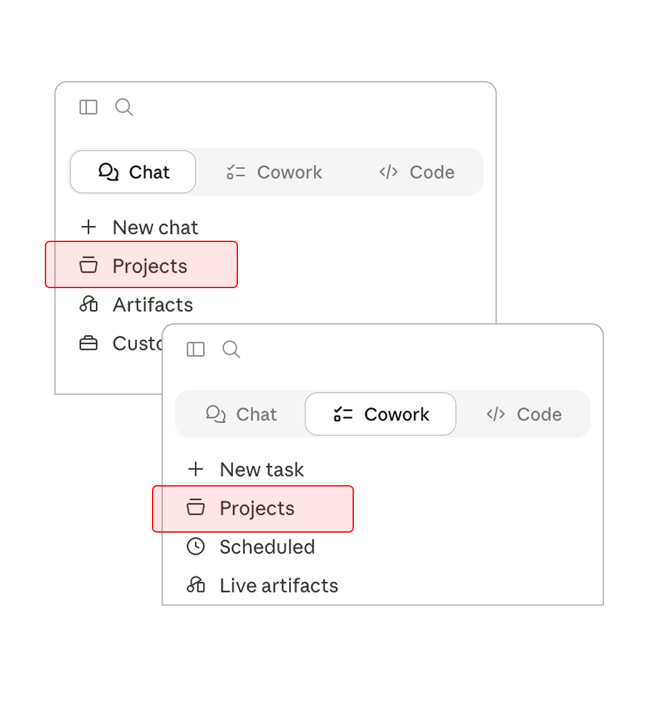
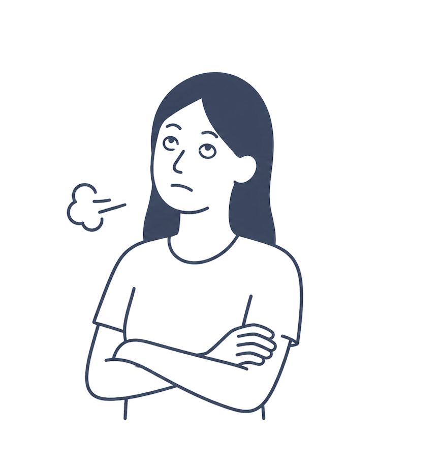
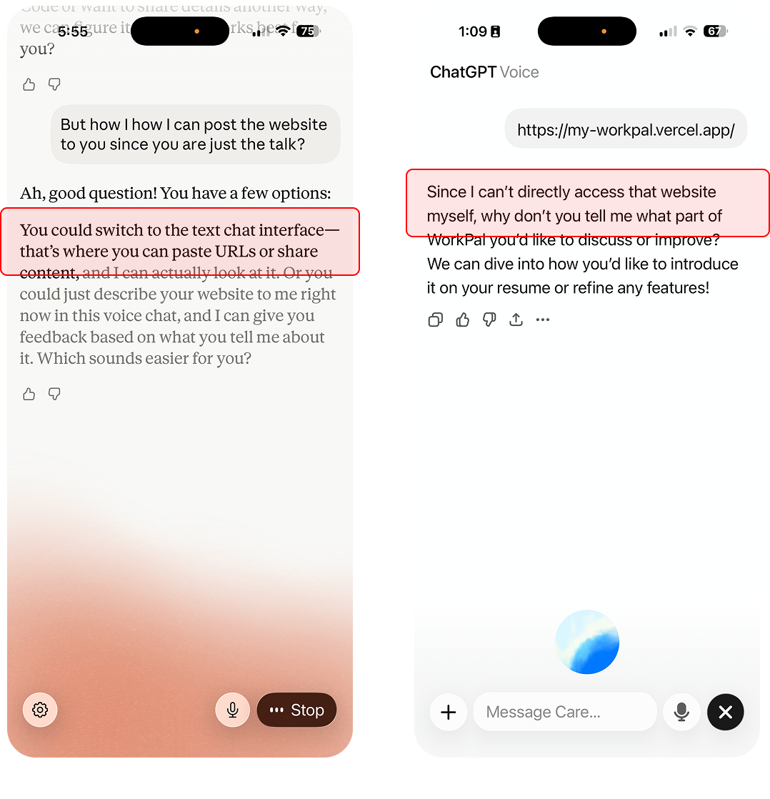
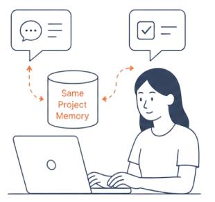
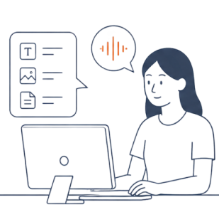
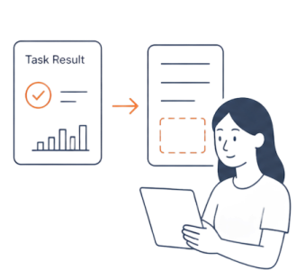
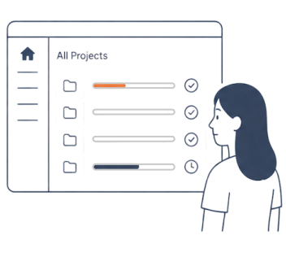

Role
Team of one · designer-PM-builder





Chat (OpenAI models) and Tasks (Anthropic agents) share the same project memory—keeping conversation and execution seamlessly connected.

In voice mode, you can add rich inputs anytime—text, images, or files—without breaking the flow.

Merge high-quality task results into your documents—turning outputs into reusable knowledge for future tasks.

Get a clear view of your agent's progress across all projects—at a glance.

Mar 26 → Apr 28, 2026.
Two research decks on agentic AI UI/UX patterns — competitive analysis + visual pattern study. Then three rounds of concept exploration (dashboard directions, product proposals, style references).
Three-panel shell, first design tokens, dark mode, and a primitives library. Figma → Tailwind pipeline, tokenized end-to-end. The design system that every later surface fits into.
The product call that came out of research: under a project foundation, chat and tasks share memory. The key decision: integrate the best chat experience and the best agent experience on the market. Then built the frontend architecture to hold this shape.
Integrated OpenAI GPT streaming over SSE. Designed the animated token bubble, feedback bar, and a mode-switching composer (chat / task) — the first version before Phase 06 unified it. Then Gmail + Calendar OAuth, structured tool-call cards, and persistent cross-session memory.
Wired the UI into Claude Agent SDK. The AI now edits local files with per-action permission prompts, every write auto-commits to git, and Undo is a real git reset --hard HEAD~1. The agent actually does things — safely and reversibly.
The big UX change I made as designer-PM: users shouldn't pick chat vs. task — the AI classifies intent from the input. Mode overhead drops to zero. Ships with single-input composer, auto-opening inspector, Promote-to-Project, and a 4-kind PermissionPrompt (file-write / read / command / external-url).
Chats and projects sync via Supabase so anything you say in the browser shows up on every device. Memory and agent execution intentionally stayed local-first — that became Phase 08's design problem to solve.
Browsers can't touch your local files. So I shipped a small Mac menu-bar app — the web UI calls it to do the file, git, and agent work. One-click install, auto-update from GitHub.
The product call behind "Selective Task Output": a project isn't just chats — it's a living knowledge base. Users attach external folders (résumé, brand guidelines) via native picker. The AI proactively reads them, and on Complete Session, you choose which task outputs merge back into the project's reference folders. Knowledge accrues across sessions. Plus channel-aware routing (natural language without keywords still goes to Claude) and one-click Output preview with reveal-in-Finder.
I'm focused on Staff / Principal roles in agentic AI, consumer-scale design, and creative tools. Happy to walk through any part of this case study live.